Categoría | Título | Experiencia | Producción.científica |
|---|---|---|---|
Titular Auxiliar | Maestría (PhD opcional) | Mínima | Mínima |
Titular Agregado | Maestría (PhD opcional) | Media | Media |
Titular Principal | PhD (exclusivamente) | Alta | Alta (de impacto) |
Nota Aclaratoria
Esta presentación constituye un análisis semi-cuantitativo de la situación de la Educación Superior en el Ecuador con enfoque en el impacto de:
La Ley Orgánica de Educación Superior (LOES) en la profesionalización de la carrera docente,
Los programas de becas de la SENESCYT,
Y, los vacíos de información para su mejora.
Esta NO representa una opinión política, sino un comentario académico basado en los datos abiertos disponibles y su análisis.
Tampoco representa un análisis jurídico profundo (no soy experto en leyes, sino un Estadístico), y el marco legal será brevemente mencionado para contextualizar las conclusiones a las que llegaré.
Fuentes de datos
Base estadística de docentes UEP 2015 - 2022 (SENESCYT)
Base de datos de Becarios actualizada agosto 2024 (SENESCYT)
Base estadística de matrícula de UEP 2015 - 2023 (SENESCYT)
Base de datos de oferta académica de las IES (SENESCYT)
Base de datos de oferta académica vigente de las IES (CES)
Encuesta ACTI (2009 - 2014) (SENESCYT - INEC)
Introducción
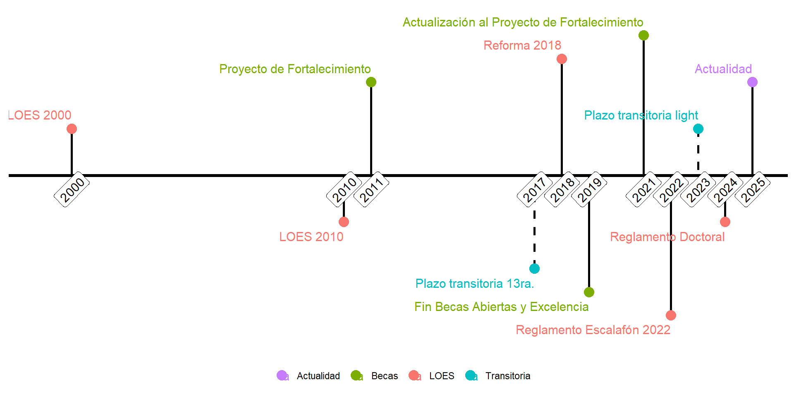Érase una LOES…
La primera LOES
Ecuador probablemente tiene las peores universidades en sudamérica
Rafael Correa, 2012\(^{†}\)
Antes del año 2000, no existía una ley orgánica específica para la educación superior.
Cada universidad establecía sus propios criterios para la contratación de docentes (tercer nivel y experiencia profesional o académica).
La autonomía universitaria permitía a las instituciones definir políticas de contratación, sin una normativa unificada.
En el 2000, se implementó la primera Ley Orgánica de Educación Superior (LOES) que creó el Consejo Nacional de Educación Superior (CONESUP) como organismo de control.
Sin embargo, cómo en el resto de América Latina, las universidades contaban con profesionales trabajando a medio tiempo como docentes, los mismos que no investigaban ni tenían grados doctorales\(^{††}\).
LOES de 2010
Con el objetivo de mejorar la calidad y la regulación de la educación superior, durante el gobierno de Rafael Correa se crea una nueva LOES.
Establece un escalafón en la docencia superior basado en meritocracia, que en el ámbito público exige concursos públicos para su adjudicación.
LOES de 2010
Con el objetivo de mejorar la calidad y la regulación de la educación superior, durante el gobierno de Rafael Correa se crea una nueva LOES.
Establece un escalafón en la docencia superior basado en meritocracia, que en el ámbito público exige concursos públicos para su adjudicación.
Categoría | Título | Experiencia | Producción.científica |
|---|---|---|---|
Titular Auxiliar | Maestría (PhD opcional) | Mínima | Mínima |
Titular Agregado | Maestría (PhD opcional) | Media | Media |
Titular Principal | PhD (exclusivamente) | Alta | Alta (de impacto) |
- No contamos con datos precisos del número de profesores con PhD antes de la LOES (ó 2015 para ser más preciso), pero estimo que era alrededor de entre el 0.8% al 1.8% del total de 26476 en 2008\(^{†}\).
† Los pocos datos disponibles son contradictorios. En el informe Logros 2014 de la SENESCYT, se informó de 226 profesores con PhD en 2008, mientras Ramirez
en su libro de 2016 “Universidad Urgente para una sociedad emancipada”, reporta 482 tan solo en el sector público.
.
.
13ra. Transitoria y CEAACES
Se entiende por tanto que bajo esta nueva LOES, se buscaba alcanzar una planta docente con mayor preparación, tanto así que
En su Décima Tercera disposición transitoria establecía: “El requisito de doctorado (…) exigido para ser profesor titular principal (…) será obligatorio luego de 7 años a partir de la vigencia de esta Ley. De no cumplirse esta condición, los profesores titulares principales perderán automáticamente esta condición.”
Y, adicionalmente creó el Consejo de Evaluación, Acreditación y Aseguramiento de la Calidad de la Educación Superior (CEAACES) que llevó a cabo un proceso de categorización de las universidades, estableciendo\(^{†}\):
70% de profesores con título de doctor PhD, para universidades orientadas a docencia e investigación.
40% de profesores con título de doctor PhD, para universidades orientadas a la docencia, y
60% de profesores con título de doctor PhD, para universidades orientadas a la educación contínua.
† Reglamento Transitorio para Tipología de Universidades (CEAACES, 2012)
.
.
El boom de becas
Proyecto de Fortalecimiento
En 2011, la SENESCYT crea el proyecto de “Fortalecimiento del Conocimiento y Talento Humano” (ligado a la política de la transformación de la matriz productiva).
Su objetivo general fue el de “Fortalecer las capacidades y el talento de los/as ecuatorianos/as garantizando su acceso a educación superior de calidad, y de esta manera aportar al nuevo esquema de desarrollo del país.”
El tiempo de ejecución fue establecido en 14 años (2011 a 2024).
Con una inversión proyectada de ~3000 millones de dólares.
Al término de su implementación, se esperaba contar un total de 77003 becarios.
Entre sus indicadores, destaco:
Al 2020, adjudicar 19000 becas para estudios de 4to. nivel en universidades (…) en el extranjero.
Al 2020, adjudicar 4200 becas (…) de excelencia académica (…) en 3er. y 4to. nivel en los más prestigiosos centros de educación superior del mundo.
Al 2020, contar con 4575 servidores públicos con formación de 4to. nivel en universidades (…) de excelencia académica en el país o en el extranjero
Cuadro tomado del proyecto de Fortalecimiento del Conocimiento y Talento Humano, SENESCYT 2012
.
.
()
Lo que el viento confundió
En el Boletín Anual Educación superior, ciencia, tecnología e innovación 2020:
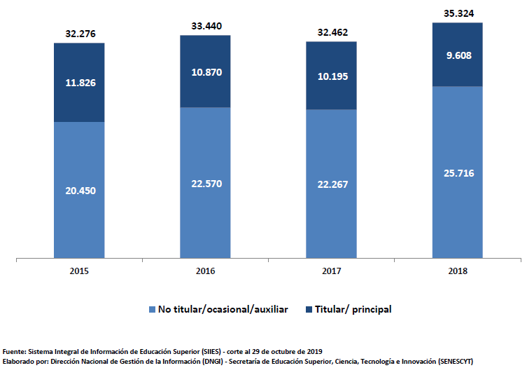
Las categorías no reflejan el escalafón docente establecido por la LOES. En específico:
Los docentes titulares agregados “desaparecen”, y
Aparentemente los titulares auxiliares son considerados No titulares (?)
Adicionalmente, este Boletín Anual no presenta cifras de la cantidad de profesores titulares principales con título de PhD, y
De manera más preocupante, este es el único boletín anual disponible.
Lo que el viento confundió
Por otra parte, en la presentación “Educación Superior, Ciencia, Tecnología, Innovación y Saberes Ancestrales en Cifras”:
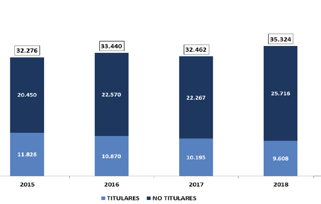
- Las mismas cifras son presentadas de manera más genérica: Titulares y No titulares
Lo que el viento confundió
Por otra parte, en la presentación “Educación Superior, Ciencia, Tecnología, Innovación y Saberes Ancestrales en Cifras”:
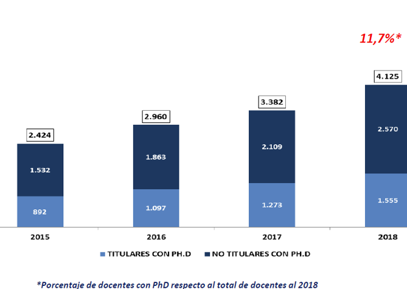
Las mismas cifras son presentadas de manera más genérica: Titulares y No titulares
Pero al menos nos muestra el número de docentes Titulares con PhD.
En definitiva, cruzando la información de los documentos oficiales disponibles, no me quedó de otra que asumir que el titular agregado desaparece (por algún motivo ajeno a mi entendimiento) y el docente auxiliar no califica como titular, dejándonos dos categorías:
Titulares (principales), y
No titulares (auxiliares y ocasionales)
Vale recalcar que estos son los únicos datos disponibles acerca del número de docentes titulares principales con grado de PhD.
El plazo: 2017
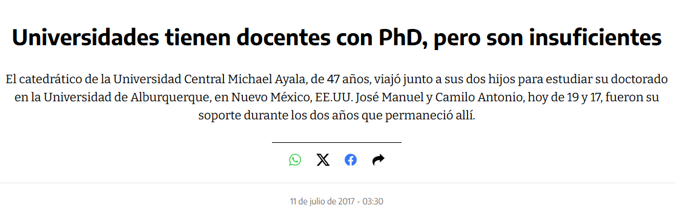
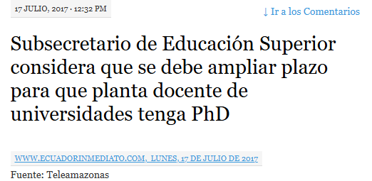
Docentes Titulares
A medida que el plazo se acercaba:
Redujeron el número de profesores titulares con respecto al total de docentes.
Aumentaron el número de profesores titulares con PhD con respecto al total de titulares.
En términos prácticos, fue imposible:
Cumplir con la transitoria 13ra. de contar con 100% de docentes titulares principales con nivel PhD hasta 2017, ó
Cumplir el 70%, 40% o 60% del total de la planta docente con PhD para ser universidad de docencia-investigación, docencia ó educación contínua, respectivamente como lo estipulaba el CEAACES.
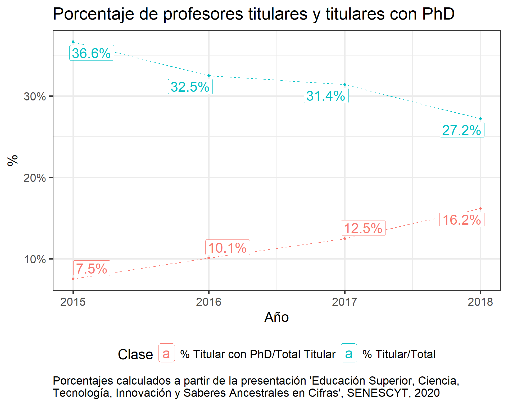
Y, ¿los becarios?
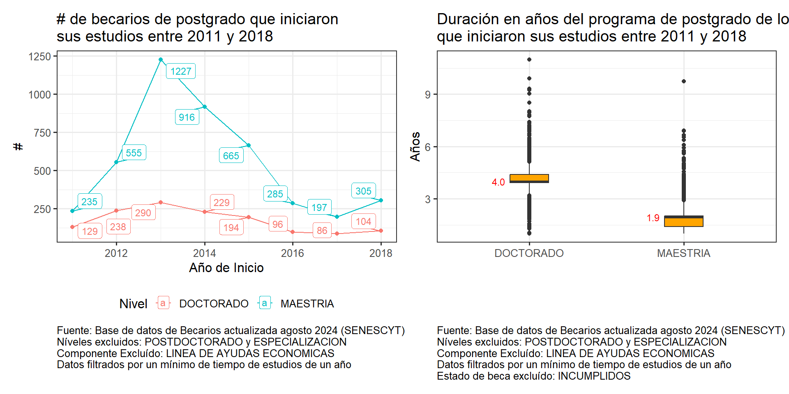Proyecciones ingenuamente simplísticas
Entre 2011 y 2017, 1262 becarios iniciaron un doctorado.
De estos, 568 terminaron sus estudios antes del 2018 (44.9% de 1262).
Según propios datos de la SENESCYT, al 2017 existían 10195 docentes titulares principales, de los cuales 1273 contaban con PhD.
Es decir, a 2017 existió de un déficit de 8922 PhDs para cumplir la transitoria décimo tercera.
Entonces, se hubiesen necesitado adjudicar alrededor de 20000 becas (16 veces más) únicamente para doctorado para cumplir con la transitoria.
Esto por supuesto, son generalizaciones muy simples pero que nos permiten llegar a la conclusión obvia: hicieron falta más PhDs
¿Qué pasó?
Más allá del plazo límite de 2017 (que careció de un sustento técnico claro), hubiese sido lógico poder contar con programas nacionales de doctorado una vez que becarios altamente calificados hacían su regreso.
Sin embargo, varias disposiciones legales limitaron seriamente la capacidad de las universidades para ofrecer programas de doctorado:
La LOES (Art. 117) solo permitía ofertar doctorados a universidades de docencia con investigación.
Estas debían tener al menos 70% de su planta con PhD (según el reglamento del CEAACES).
Además, el 100% de los titulares principales debían contar con PhD (transitoria 13ra.)
Aparte de los números imposibles de alcanzar, debemos agregar una historia de una tradición muy nuestra de burocratizarlo todo: sucesivos cambios en legislación y reglamentos para otorgar títulos (doctorales especialmente).
Estas condiciones muy probablemente dejaron a las universidades sin posibilidad real de crear programas doctorales, dependiendo de los becarios en el exterior para cubrir esa demanda a futuro.
La oferta educativa de postgrados
Lástimosamente no contamos con datos a lo largo del tiempo sobre la vigencia de los programas de postgrado*.
Así, actualmente en las bases de datos de oferta académica de las IES** encontramos:
NIVEL | VIGENTES | NO_VIGENTES |
|---|---|---|
Doctorado | 47 | 8 |
Maestrías | 3009*** | 2779 |
Y podemos intuir:
La estabilidad de los programas de maestría es baja.
La oferta de programas de doctorado es marcadamente reducida.
* La vigencia de un programa depende de su renovación, por lo que las fechas disponibles corresponden a la última vez que el mismo fue renovado.
** De acuerdo a las bases de datos de oferta académica de las IES (SENESCYT) y de oferta académica vigente de las IES (CES)
*** Incluye maestrías: académicas (864), académicas con trayectoria de investigación (187), académicas con trayectoria profesional (1861), de investigación (16), profesionales (17), y tecnológicas (64).
.
.
La oferta de programas de doctorado
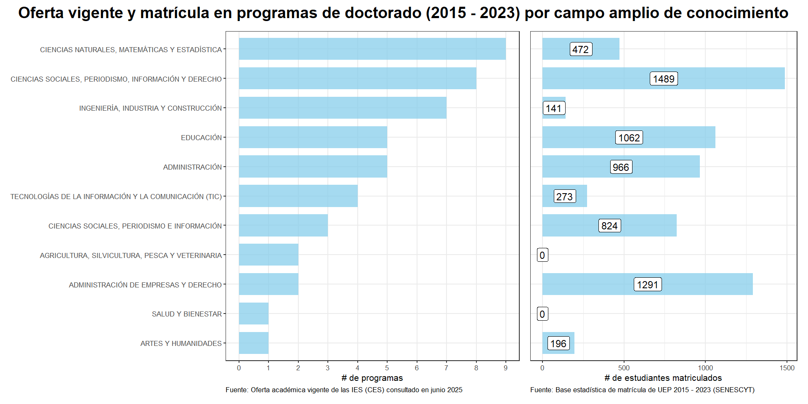Reforma de la LOES 2018
El Art. 117 y el CASES
El Art. 117 Es reformado en su totalidad estableciendo que todas las universidades y escuelas politécnicas son instituciones de docencia e investigación.
Se flexibiliza su capacidad de decidir las carreras o programas que oferten, indicando únicamente que aquellas que oferten programas doctorales, deberán ser acreditadas por el Consejo de Aseguramiento de la Calidad de la Educación Superior (CASES).
La transitoria “light”
- La transitoria décimo tercera es cambiada, estableciendo: El requisito de doctorado (…) exigido para ser profesor titular principal (…) será obligatorio a partir del primero (1o.) de enero de 2023. De no cumplirse la condición, los profesores titulares principales pasarán a formar parte del escalafón previo en los términos y condiciones establecidos por el Consejo de Educación Superior.
Camino al 2023
Becas en coma
Después de un crecimiento vertiginoso entre 2010 y 2013 - 2014,
Un vertiginoso descenso ocurrió hasta el 2018 - 2019 para las becas más representativas del plan de fortalecimiento: Convocatoria Abierta, y Universidades de Excelencia.
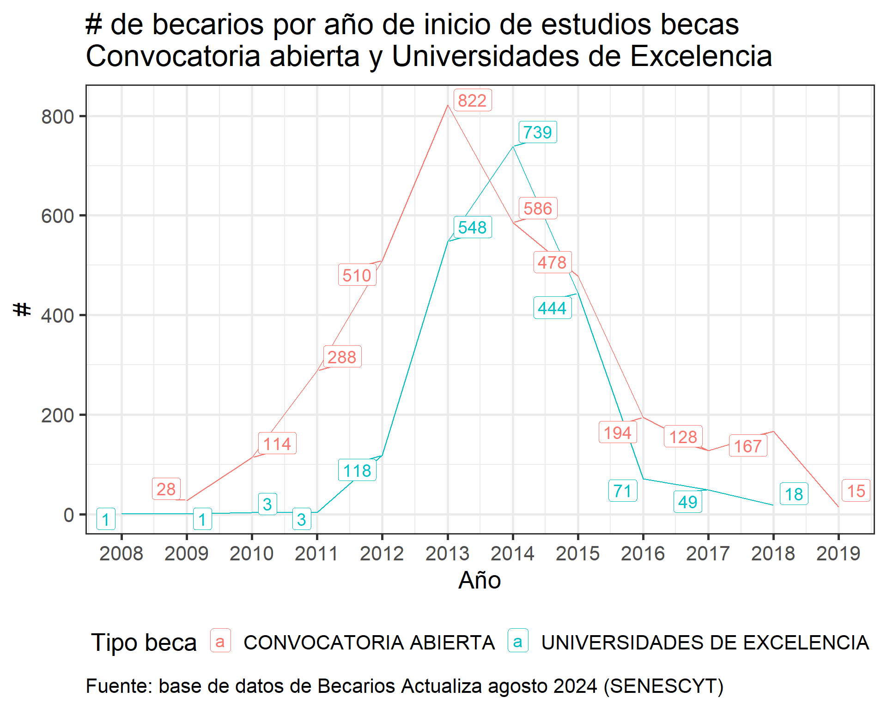
Reviviendo a un paciente en coma
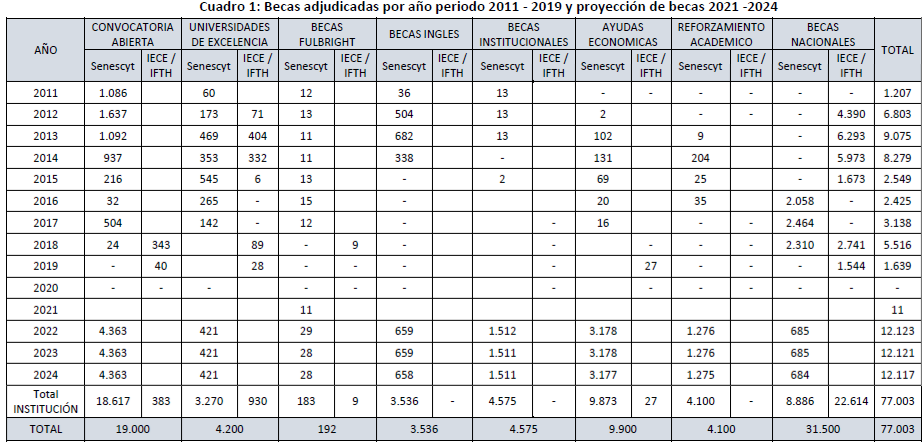Cuadro tomado de la Actualización del proyecto de Fortalecimiento del Conocimiento y Talento Humano, SENESCYT 2021
.
.
el paciente se nos fue al cielo…
Imágen creada en Gemini.ai
.
.
Reglamento del Escalafón 2022
En 2022, es publicado el “Reglamento de Carrera y Escalafón del Personal Académico del Sistema de Educación Superior” en su décima disposición general se indica
El personal académico de las universidades (…) que alcanzaron la categoría de titular principal antes de la entrada en vigencia de la LOES del 12 de octubre del 2010, y que no cuenten con título de PhD hasta el primero de enero del 2023, pasarán a ser denominados profesores titulares principales de escalafón previo y se respetarán sus derechos adquiridos.
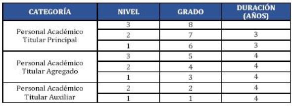
Radiografía en números
Números en general
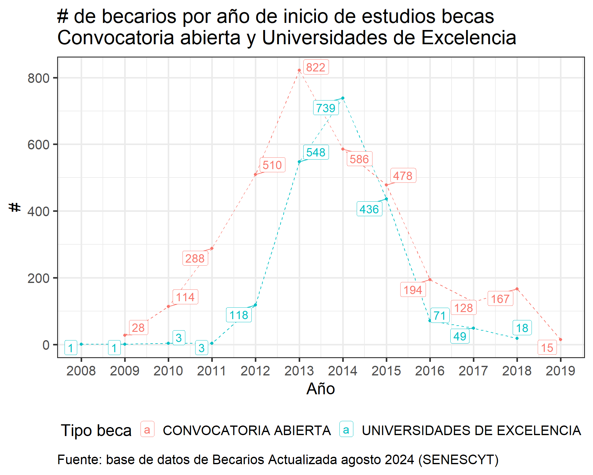

Distribución porcentual de docentes
Notamos que los grados académicos de docentes universitarios de 2015 a 2022 presentaron:
Reducción de 2.6% de Diplomados
Aumento de 1.8% de Doctorados
Aumento de 2.6% de Especialidades en Salud
Aumento de 6.7% de Maestrías
Reducción de 8.7% de Títulos de Tercer nivel
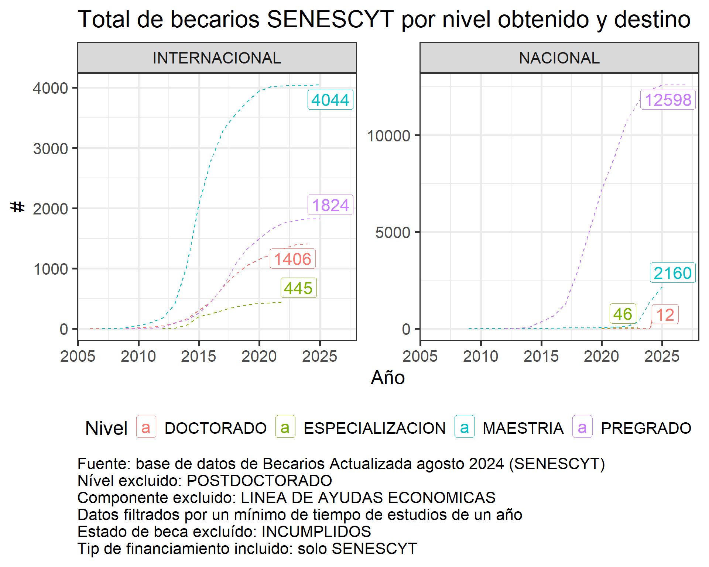
Total docentes sector privado vs. público
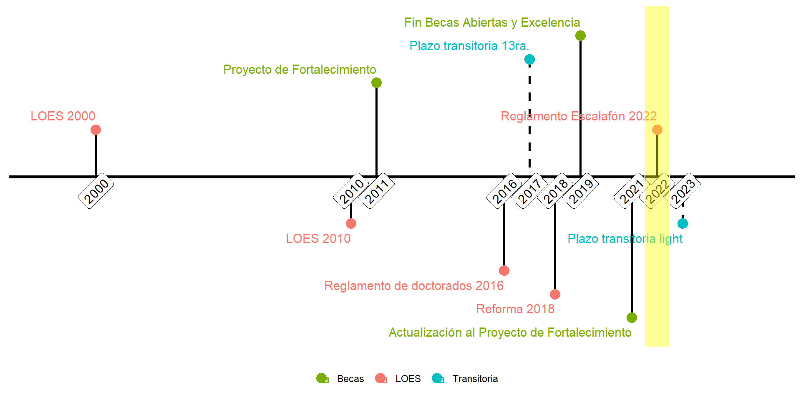
Porcentage docentes sector privado vs. público
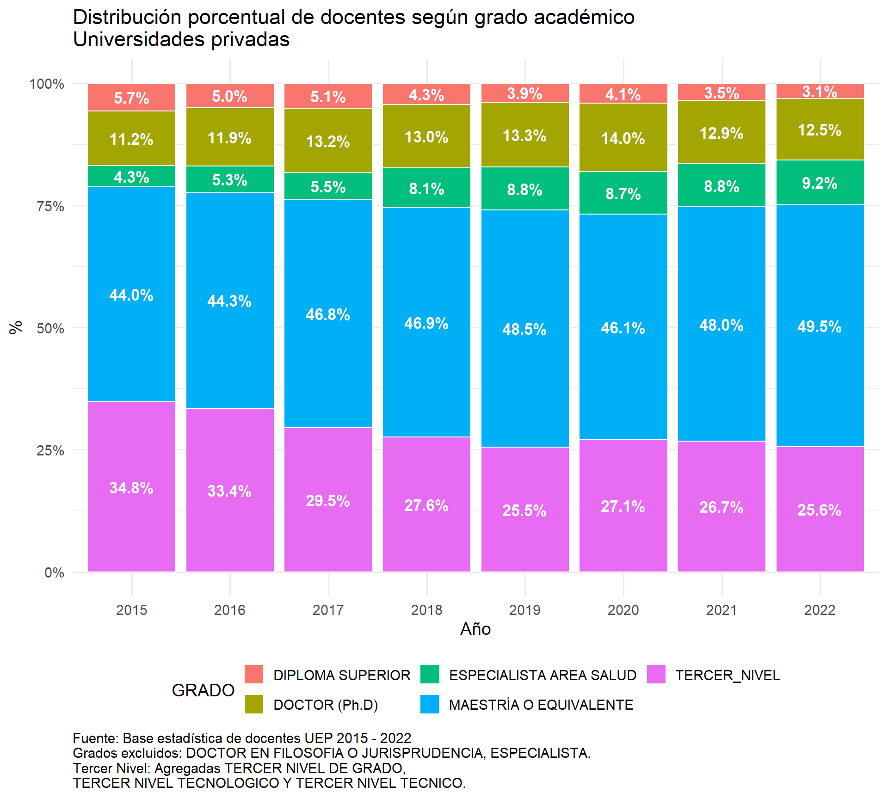
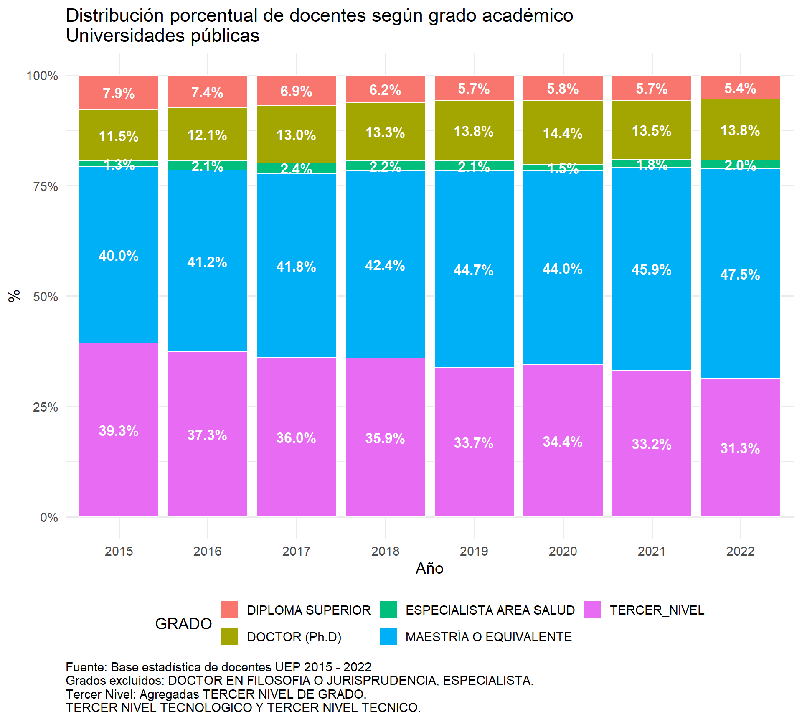
Relaciones laborales
Relación laboral en universidades privadas (%)
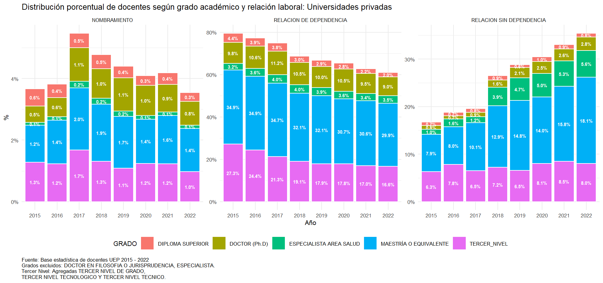Relación laboral en universidades públicas (%)

La ACTI
El INEC, conjuntamente con la SENESCYT, llevaron a cabo para los periodos 2009-2011 y 2012-2014 la Encuesta Nacional de Actividades de Ciencia, Tecnología e Innovación (ACTI) dirigida a Universidades, Escuelas Politécnicas, Institutos Públicos de Investigación, entidades del Gobierno Central, Hospitales Públicos de Docencia y Organismos Privados sin Fines de lucro.
El objetivo era conocer los indicadores relacionados a la investigación científica, desarrollo tecnológico e innovación del país.
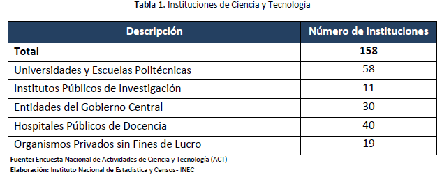
- En esta se incluyeron variables para recolectar el número de becarios de doctorado vinculados a estas instituciones como una manera de reflejar el gasto de la SENESCYT en su preparación.
Doctorantes en la ACTI
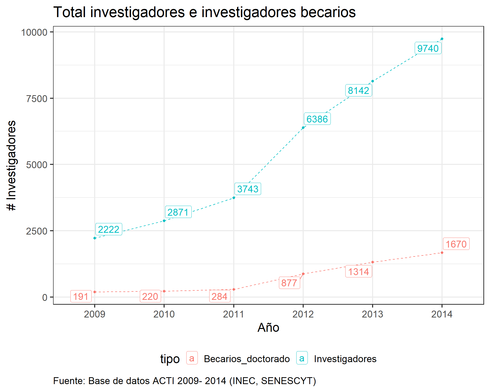
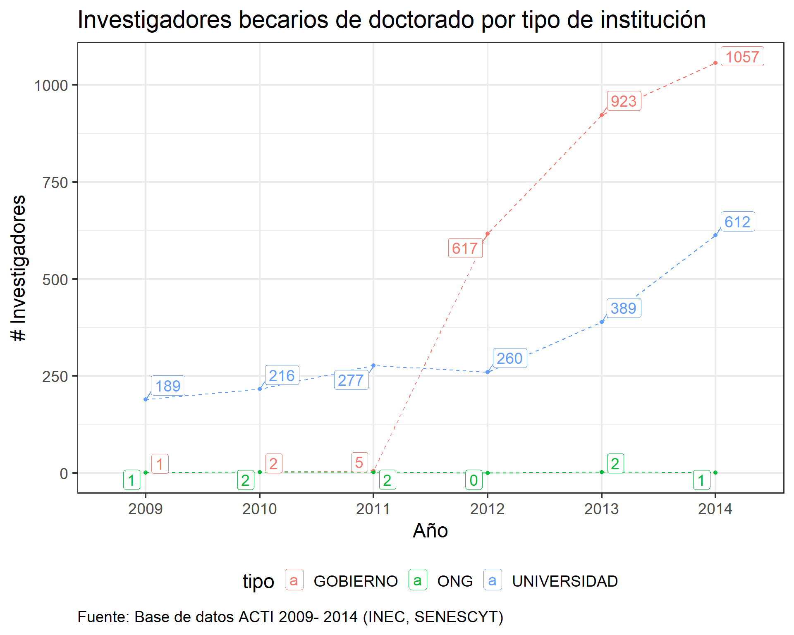
Desempleo de los becarios
- ¿Podemos cuántificarlo? si, un poquito y en gran medida, no
¿Fallamos?
¿Quién valida a quién en la universidad?
Sin adentrarnos en debates filosóficos profundos, el modelo de educación occidental ha sido impactado por contextos históricos:
El nacimiento del doctorado en el sistema alemán en el siglo XIX, considerado elitista al denominar a un reducido grupo de personas como investigadores-docentes.
Estados Unidos tras la segunda guerra mundial masifica el modelo alemán, y el PhD se vuelve el ticket de entrada a la academia de “verdad”.
La universidad latinoamericana, influida por la herencia colonial española (con mayor enfoque en enseñanza profesionalizante), reproduce aún formas de colonialidad del saber.
Sin embargo, actualmente la internacionalización de la educación superior empujada por rankings, adopta el PhD y la publicación de investigaciones científicas como indicadores de excelencia.
Así, con la LOES del 2010 se buscaba alinear nuestra educación superior con esos parámetros globales de excelencia académica (respaldados por sugerencias de la UNESCO y el BID en los años 2000), no siempre definidos desde nuestros contextos y necesidades locales.
En fin, en un mundo continuamente caminando hacia la globalización, pues sigamos en este análisis…
Una vista al vecindario
| país | porcentaje | año | fuente |
|---|---|---|---|
| Ecuador | 12.8% | 2022 | SENESCYT |
| Colombia | 11.8% | 2023 | Ministerio de Educación Nacional |
| Argentina | 12.8% | 2022 | Ministerio de Educación Argentina |
| Chile | 16.9% | 2024 | Subsecretaría de Educación Superior |
| México | 17.6% | 2023 | Sistema Integrado de Información de la Educación Superior |
Pero entonces, no estamos tan mal… verdad?
Becarios: entre buenas intenciones, controversia, y fuga de cerebros?
Buenas intenciones
Entre los indicadores establecidos, destacaba (en el hilo narrativo de esta presentación):
Al 2020, contar con 4575 servidores públicos con
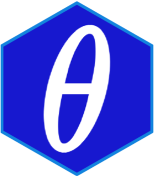